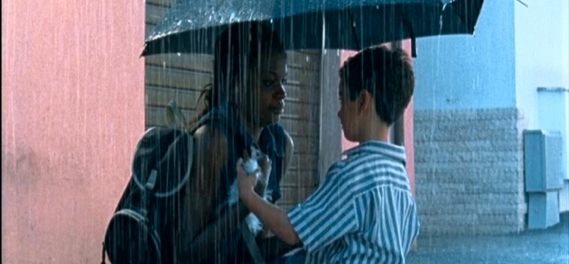
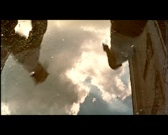

Lama Film

Sinossi
Una donna di colore e un bambino di razza bianca vivono realtà differenti in uno stesso quartiere di periferia ai margini della società. Lei è una prostituta, lui gioca in strada in una giornata d’estate con alcuni compagni. In maniera inaspettata le loro strade si incrociano solo per alcuni momenti, l’innocenza e la generosità del bambino salveranno la prostituta dall’arrivo della Polizia.
Biografia dell’autore
Giuseppe K. Miglietta nasce il 13 Luglio 1975 a Foggia. Nel 2001 si laurea in “Scienze della comunicazione” all’ Università degli Studi di Salerno con una tesi sulla “Teoria e tecnica del linguaggio cinematografico”. Nel 2003 si diploma in regia alla N.U.C.T., Nuova Università del Cinema e della Televisione, a Roma. Dal 2003 è stato assistente alla regia di alcuni TV movies quali “Paolo Borsellino” di Gianluca Maria Tavarelli, “Distretto di Polizia”, “Nassiriya” di Michele Soavi. Nel 2003, ha scritto e diretto il suo primo cortometraggio dal titolo “La stanza di Caronte” che è stato presentato in diverse nazioni e ad alcuni festival internazionali quali “Bellaria film festival 2004” ed il “Med film festival 2004”.
scritto e diretto : Giuseppe K Miglietta
interpreti: Davide Poggioli & Sonia Paulo Mavunja
produttore Cesare Apolito
fotografia: Andrea Locatelli
montaggio: Stefano Cormino
scenografia: Valentina Scalia
costumi: Loredana Buscemi
sound design: Mario Iaquone
formato di ripresa: 35mm colour
Norm: PAL 4:3 1:85
Audio: Stereo DOLBY SR
durata: 10’
anno: 2007


Tana

